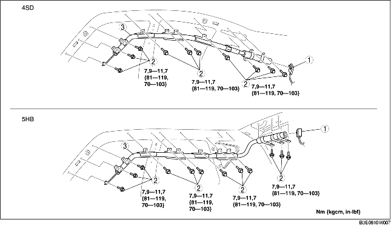

VERWIJDEREN/PLAATSEN WINDOWBAG
B3E081000171W01
-
Waarschuwing
-
• Een onjuiste behandeling van de airbag kan ertoe leiden dat de airbag ongewild wordt geactiveerd, waardoor ernstig letsel kan ontstaan. Lees de VOORZORGSMAATREGELEN BIJ SERVICE alvorens werkzaamheden aan de onderdelen van het airbagsysteem uit te voeren. (Zie VOORZORGSMAATREGELEN BIJ SERVICE.) (Zie OPMERKINGEN VOOR SERVICEWERKZAAMHEDEN.)
1. Zet het contact in stand LOCK.
2. Neem de minkabel van de accu los en wacht minstens 1 minuut.
3. Verwijder de volgende onderdelen:
-
(1) Middenconsole (4AD) (Zie VERWIJDEREN/PLAATSEN MIDDENCONSOLE.)
-
(2) A-stijlbekleding (Zie VERWIJDEREN/PLAATSEN A-STIJLBEKLEDING.)
-
(3) Dorpellijst vóór (Zie VERWIJDEREN/PLAATSEN DORPELLIJST VOOR.)
-
(4) Dorpellijst achter (Zie VERWIJDEREN/PLAATSEN DORPELLIJST ACHTER.)
-
(5) Onderste deel B-stijlbekleding (Zie VERWIJDEREN/PLAATSEN ONDERSTE B-STIJLBEKLEDING.)
-
(6) Bovenste bevestigingspunt veiligheidsgordel vóór (Zie VERWIJDEREN/PLAATSEN VEILIGHEIDSGORDEL VÓÓR.)
-
(7) Bovenste deel B-stijlbekleding (Zie VERWIJDEREN/PLAATSEN BOVENSTE B-STIJLBEKLEDING.)
-
(8) Achterbank (Zie VERWIJDEREN/PLAATSEN ACHTERBANK.)
-
(9) Bekleding wielkuip (Zie VERWIJDEREN/PLAATSEN BEKLEDING WIELKUIP.)
-
(10) Bovenste zijpaneel bagageruimte (5HB) (Zie VERWIJDEREN PLAATSEN ZIJPANEEL BAGAGERUIMTE.)
-
(11) C-stijlbekleding (Zie VERWIJDEREN/PLAATSEN C-STIJLBEKLEDING.)
-
(12) Leeslampje (Zie VERWIJDEREN/PLAATSEN LEESLAMPJE.)
-
(13) Interieurverlichting (Zie VERWIJDEREN/PLAATSEN INTERIEURVERLICHTING.)
-
(14) Zonneklep (Zie VERWIJDEREN/PLAATSEN ZONNEKLEP.)
-
(15) Handgreep (Zie VERWIJDEREN/PLAATSEN HANDGREEP.)
-
(16) Hemelbekleding (Zie VERWIJDEREN/PLAATSEN HEMELBEKLEDING.)
-
(17) Hoofdbescherming (Zie VERWIJDEREN/PLAATSEN HOOFDBESCHERMING.)
4. Verwijder de onderdelen in de aangegeven volgorde, zie de tabel.

|
1
|
Stekker
|
|
2
|
Bout
|
|
3
|
Windowbag
|
5. Plaats de onderdelen in omgekeerde volgorde.
6. Controleer of het waarschuwingslampje airbagsysteem na het in stand ON zetten van het contact gedurende ongeveer 6 seconden gaat branden en vervolgens uit gaat.
-
• Raadpleeg het zelfdiagnosesysteem en voer een systeemcontrole uit als het waarschuwingslampje airbagsysteem niet juist werkt.